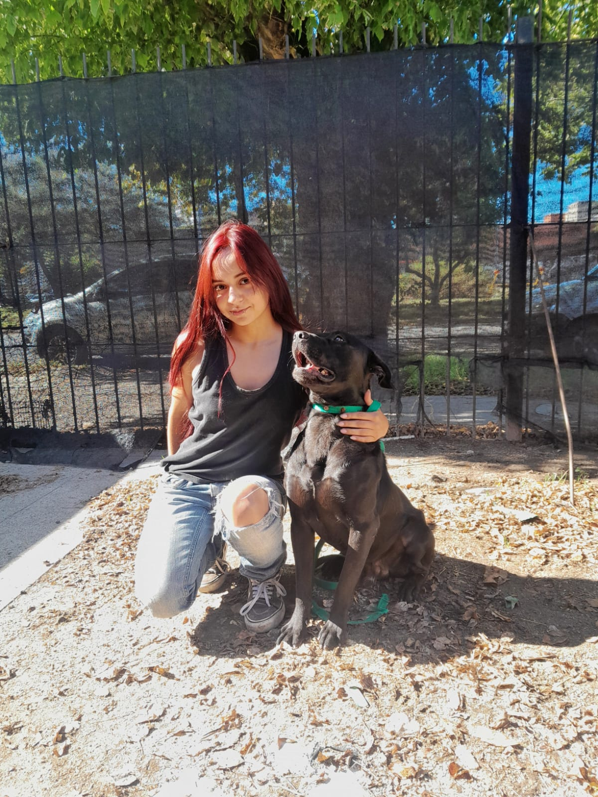

<section class="bio-section" id="bio" appReveal="slide-lateral">
  <div class="bio-container">
    <div class="bio-grid">
      <div class="bio-image-wrapper">
        <div class="bio-image-background"></div>
        
      </div>
      <div class="bio-content">
        <div class="bio-badge">Adiestradora Canina Profesional</div>
        <h2 class="bio-title">
          Educación canina <br/>personalizada y práctica
        </h2>
        <div class="bio-text">
          <p>Hola, soy Magalí. Me dedico a la educación canina y adiestramiento de perros en Mar del Plata con un enfoque práctico y adaptado a cada perro.</p>
          <p>El adiestramiento canino que realizo se basa en observar el comportamiento real del perro y su vínculo con el dueño.</p>
          <p>No creo en recetas únicas. Cada perro necesita un enfoque distinto según su carácter, entorno y nivel de estrés. Mi objetivo es brindar soluciones duraderas en educación canina.</p>
        </div>
        <ul class="bio-list">
          <li>
            <span class="material-icons">check_circle</span>
            <span>Adiestramiento canino realista y sin falsas promesas.</span>
          </li>
          <li>
            <span class="material-icons">check_circle</span>
            <span>Educación canina a domicilio en Mar del Plata.</span>
          </li>
          <li>
            <span class="material-icons">check_circle</span>
            <span>Herramientas prácticas para el día a día.</span>
          </li>
        </ul>
      </div>
    </div>
  </div>
</section>
